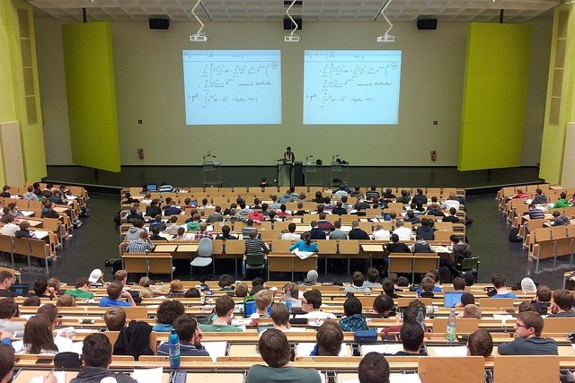
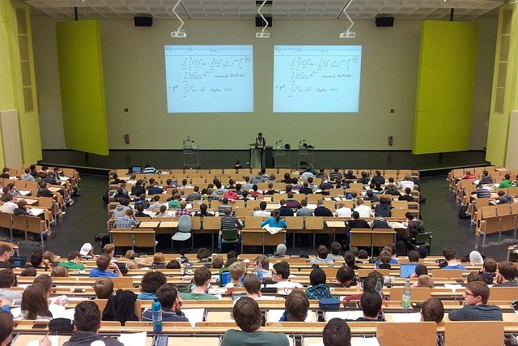

Welcome
A university is an institution of higher education and research, which awards academic degrees in various academic disciplines. Universities typically provide undergraduate education and postgraduate education.A university is an institution of higher education and research, which awards academic degrees in various academic disciplines. Universities typically provide undergraduate education and postgraduate education.A university is an institution of higher education and research, which awards academic degrees in various academic disciplines. Universities typically provide undergraduate education and postgraduate education.
Happenings

 
